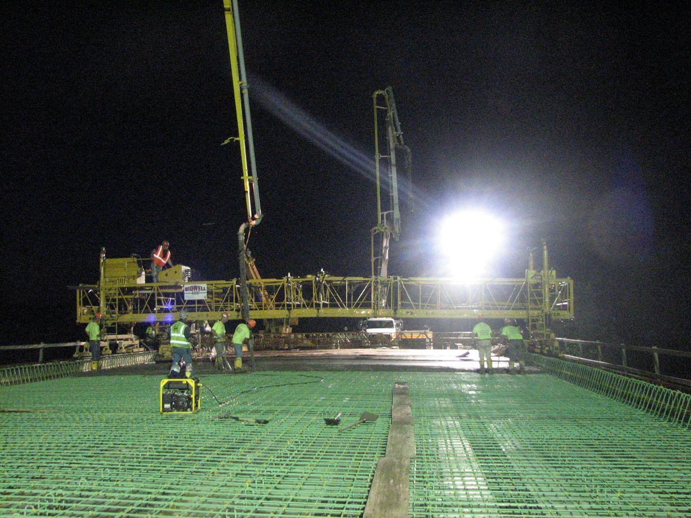
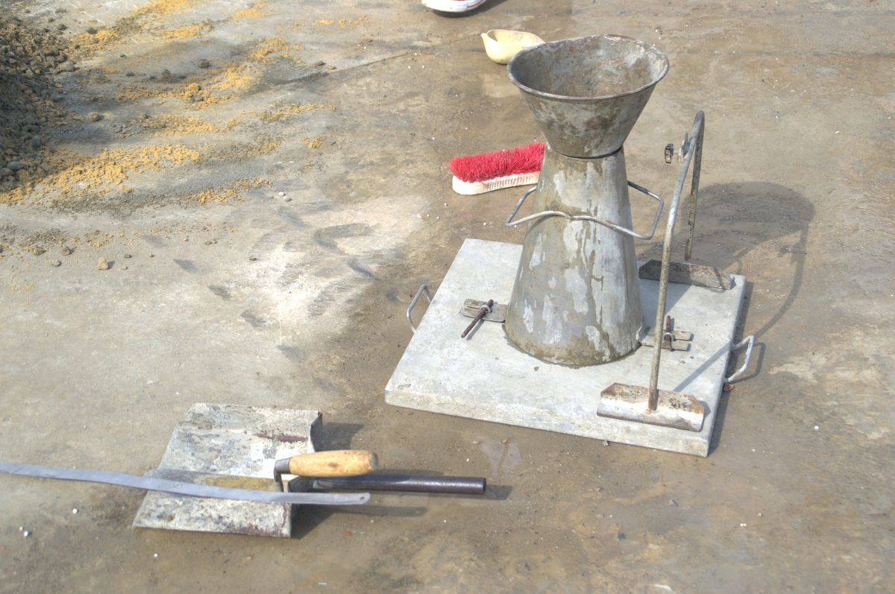
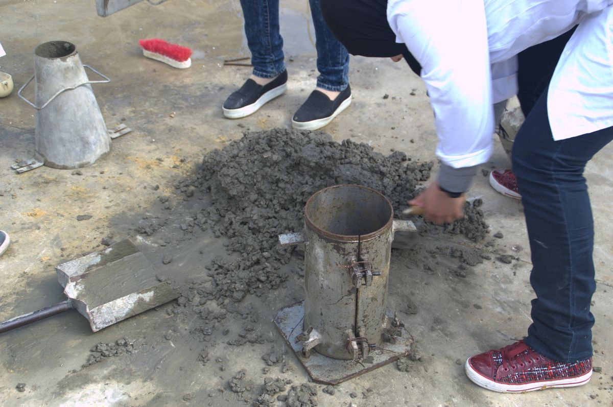

1Why air is measured

Concrete that will freeze needs air in it — not the accidental voids left by careless rodding, but a deliberate population of tiny bubbles spread evenly through the paste. Water expands when it freezes, and in a saturated paste with nowhere to go that expansion tears the concrete apart from the inside, a scale or two of surface at a time. Entrained air bubbles are the escape space. Water pushed ahead of the ice front reaches a bubble, the pressure releases, and the paste survives the cycle.
Entrained air is added on purpose with an admixture: small bubbles, closely spaced, stable through mixing and placing. Entrapped air is what consolidation is supposed to remove: larger, irregular voids left between the aggregate. Both count in the air content the meter reads, which is why a badly consolidated sample can pass the air test and still be poor concrete.
Air is not free. Every percent of it is a percent of the concrete's volume that carries no load, and strength falls by a few percent for each percent of air. That is the trade: enough air to survive the winters the structure will see, and not one point more. How much is enough is set by the exposure and the aggregate size, from the same ACI table the mix design uses — the target air content in Part 1, step 3.
2The pressure meter (ASTM C231)
The pressure method does not see the bubbles. It squeezes them. A known volume of air, held in a chamber at a known pressure, is released into a sealed bowl of concrete. The only compressible thing in the bowl is the air inside the concrete, so the pressure that settles out depends on how much of it there is — and the gauge face is printed in percent air rather than in pressure units, so the technician reads the answer directly.
- Fill and consolidate. Three layers, twenty-five strokes of the tamping rod each, the second and third penetrating about an inch into the layer below; after each layer, tap the sides smartly ten to fifteen times with the mallet to close the holes the rod left. A stiff mixture is consolidated by internal vibration instead — the same rule that governs the density measure below.
- Strike off and clean the rim. Leave the measure just level full, then wipe the flange — a smear of mortar there is a leak, and a leak reads as air.
- Clamp and flood. Moisten the underside of the cover, open both petcocks, close the main air valve, clamp the cover down. Inject water through one petcock until it runs out of the other, and jar the meter gently until no more air comes with it.
- Set the initial pressure. Close the bleeder valve and pump past the initial pressure line; wait a few seconds for the compressed air to cool, then tap the gauge and bleed slowly back until the needle sits exactly on the line, and close the bleeder valve again.
- Equalize and read. Close both petcocks, open the main air valve, tap the side of the measure with the mallet and tap the gauge to settle the needle. Read the air content to the nearest 0.1 %.
- Subtract the aggregate. The aggregate carries a little air of its own. The aggregate correction factor for the mix is subtracted from the gauge reading to get the air in the concrete.
The pressure method assumes the aggregate is dense. With lightweight aggregate, air-cooled slag or any porous stone the correction factor cannot be pinned down, and the volumetric method (ASTM C173) is used instead. The gauge itself is not permanent either: it is standardized against a known volume of water at least every three months, and the result is logged with the meter.
3Density and yield (ASTM C138)


The second test weighs a known volume of the same concrete. That single number — the density, still universally called the unit weight — is worth more than it looks, because everything else on the batch ticket can be checked against it.
The measure is a stiff cylindrical container whose volume is known, not assumed. Bigger aggregate needs a bigger measure, and the bowl of the air meter can serve as the measure if it is the right size.
| Nominal maximum size of aggregate | Capacity, ft³ | Capacity, m³ |
|---|---|---|
| 1 in. (25 mm) | 0.25 | 0.0071 |
| 2 in. (50 mm) | 0.5 | 0.0142 |
| 3 in. (76 mm) | 1.0 | 0.0283 |
The volume is established by weighing the measure full of water at a known temperature and dividing that mass by the density of water at that temperature — not by trusting the nameplate. A 1/4 ft³ measure that holds 15.53 lb of water at 23 °C has a volume of 15.53 ÷ 62.274 = 0.2494 ft³, and that is the number the density is figured on.
How the concrete is consolidated depends on how wet it is: rodding above a 3 in. slump, rodding or internal vibration between 1 and 3 in., internal vibration below 1 in. Rodding follows the same rhythm as the air test — three layers, twenty-five strokes, ten to fifteen mallet taps — and the last layer is left about an eighth of an inch proud so the strike-off plate has something to take off. Then the outside is wiped clean and the whole thing is weighed.
ρ is the density, Vm the volume of the measure, W the total mass of everything batched, Y the yield — the volume of concrete that batch produced — and N the cementitious content actually delivered per unit volume, from Nt, the mass of cementitious material in the batch. Divide the cubic feet by 27 for cubic yards. Density is reported to 0.1 lb/ft³, yield to 0.01 yd³, cement content to 1 lb/yd³, air content to 0.1 % and the water-cement ratio to 0.01.
Both tests come from one sample and one clock. When the same sample serves both, the work begins within five minutes of taking it, and the density test goes first — the air meter's bowl is often the density measure, so it has to be weighed before it is clamped shut.
4Reading the yield
Ready-mixed concrete is sold by volume and batched by weight, so the volume is never measured directly — it is computed from the density. That makes the density test the only check a purchaser has on whether eight cubic yards ordered were eight cubic yards delivered.
Relative yield is the volume obtained over the volume the batch was designed for. At 1.00 the load is what it claimed to be. Below 1.00 it is short, and the forms will run out of concrete before they run out of form. Above 1.00 the batch made more than it should have, which sounds like a gift and is usually a symptom: too much air, too much water, or aggregate batched heavy. A single load proves nothing either way — ASTM C94 asks for the average of three determinations, each from a different truck, before yield is called into question.
Most "short load" complaints are not short loads. A slab 4 in. thick placed an eighth of an inch too deep costs about three percent more concrete than the estimate — a whole cubic yard on a thirty-two yard order. Deflecting forms, an irregular subgrade and spillage all take their cut, which is why the practical advice is to order four to ten percent over the plan dimensions and to measure the forms before blaming the truck.
One more subtraction is honest to make: hardened concrete occupies about two percent less space than the fresh concrete it came from, as air is lost, the mix settles and bleeds, and the paste shrinks on drying. The yield test measures what came out of the truck, not what will still be there next month.
5Worked example
An eight-cubic-yard load is batched to the mixture used throughout this site — 299 lb of water, 544 lb of cement, 1,872 lb of coarse aggregate and 1,292 lb of fine aggregate for every cubic yard, with 1.5 % air allowed for. That mixture is not air-entrained, so the 1.5 % is the entrapped air the ACI table expects at this aggregate size, not a target bought with an admixture. That is 4,007 lb of material per cubic yard, so the ticket totals 32,056 lb of material and 4,352 lb of cement. The example numbers are made up but typical.
The materials themselves, with no air at all, take up 27.00 × (1 − 0.015) = 26.60 cu ft per cubic yard, or 212.76 cu ft for the load. Dividing the batch mass by that air-free volume gives the theoretical density — what this concrete would weigh per cubic foot if it contained no air at all:
Now the density measure comes out. Two loads from the same ticket are weighed, and they do not agree.
| Quantity | Load A | Load B |
|---|---|---|
| Measured density, lb/cu ft | 148.4 | 145.0 |
| Yield, cu yd | 8.00 | 8.19 |
| Relative yield | 1.00 | 1.02 |
| Air content (gravimetric), % | 1.5 | 3.8 |
| Cement content, lb/cu yd | 544 | 532 |
Load A is the mixture the designer drew: eight cubic yards of concrete, air on target, the full 544 lb of cement in every yard of it. Load B is 3.4 lb per cubic foot lighter, and every one of those pounds has to be somewhere. It is air — 3.8 % of it against the 1.5 % designed, better than two extra points. The batch swelled to 8.19 cubic yards, which is why nobody on site complained, and the cement that was supposed to be spread through eight yards is now spread through eight and a fifth: about 532 lb per cubic yard instead of 544. The load looks generous and is weaker than the drawing asked for.
The cement content is figured on the unrounded yield; dividing by the reported 8.19 gives 531 rather than 532. Gravimetric air agrees with a pressure-meter reading on the same concrete only as well as the batch weights and the aggregate relative densities do — the pressure meter measures the sample in front of it, while this arithmetic trusts the ticket.
6Common mistakes
- Forgetting the aggregate correction factor. The gauge reading is not the air content until the aggregate's own air is subtracted. Skipping it reports air the concrete does not have.
- A dirty flange. Mortar on the sealing surface leaks, and a leak always reads as more air. Wipe the rim before the cover goes on.
- Over-vibrating the sample. Vibration long past consolidation drives out the entrained air the admixture was bought for — and the sample no longer represents the concrete in the forms.
- Trusting the nameplate volume. Measures get dented and worn. The volume is the mass of water it holds divided by the density of water at that temperature, checked on a schedule.
- Calling a load short from one test. Yield is judged on three determinations from three trucks. One low density is a question, not a verdict.
- Blaming the truck before measuring the forms. An eighth of an inch of extra slab thickness costs about three percent of the order — more than most real yield discrepancies.
7Key takeaways
- Air is bought for freeze-thaw survival and paid for in strength; the meter reports entrained and entrapped air together, so consolidation has to be right before the reading means anything.
- The pressure method (C231) works by equalizing a known air volume into the sealed bowl, read to 0.1 % and corrected for the aggregate — and it is only valid for dense aggregate.
- Density (C138) is mass ÷ the measured volume of the measure, and from it come the yield W/ρ, the relative yield, and the cement actually delivered per cubic yard.
- Comparing the measured density with the theoretical density gives the air content a second way — and explains where a light load's missing pounds went.
Sources: ASTM C231/C231M (air content by the pressure method) and ASTM C138/C138M (density, yield and gravimetric air content), as published in the WSDOT Materials Manual M 46-01.48 (January 2026) field operating procedures for AASHTO T 152 and T 121, which mirror them; the WAQTC field procedure for T 121; NRMCA CIP 8, Discrepancies in Yield; ASTM C94 for the three-truck yield rule; ASTM C173 for the volumetric method. Clause numbers, aggregate correction factors and the strength cost of air are described qualitatively; consult the current edition for the numbers.
Photo credits: High Performance Concrete WI by the Federal Highway Administration, public domain; Essais sur béton DSC 2155 and DSC 2171 by Habib M'henni, CC BY 4.0; all via Wikimedia Commons. The photos were resized, cropped and recompressed for the web.
.jpg){kind=link}
{kind=link}
{kind=link}